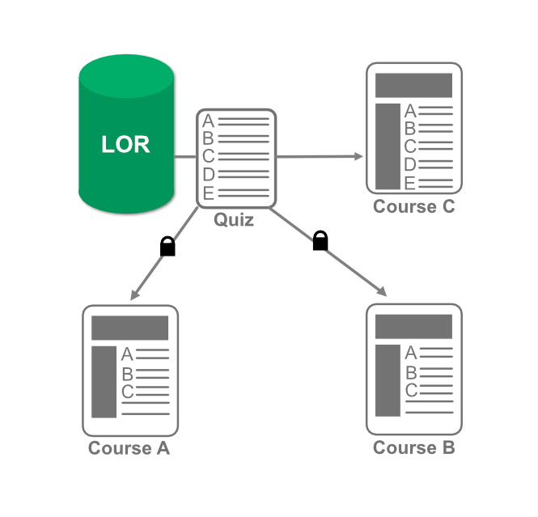

A locked link is similar to a dynamic link, except when a new version of the object is published to the LOR, the object in your course will not update. You would want to use this method if you do not want the object to change.
Tip: For large files this can be a useful option as it reduces the amount of space learning objects take up.
Example: There is a 5 question quiz published to the LOR. Two of the courses have retrieved the quiz using a locked link. A third course has used a dynamic link.
The author of the object adds two more questions to the quiz, and overwrites the version in the LOR. The third course (Course C), updates to reflect the additional questions because it has a dynamic link. Course A and B do not receive the new questions because they have used a locked link.
Advance to continue to the next method.